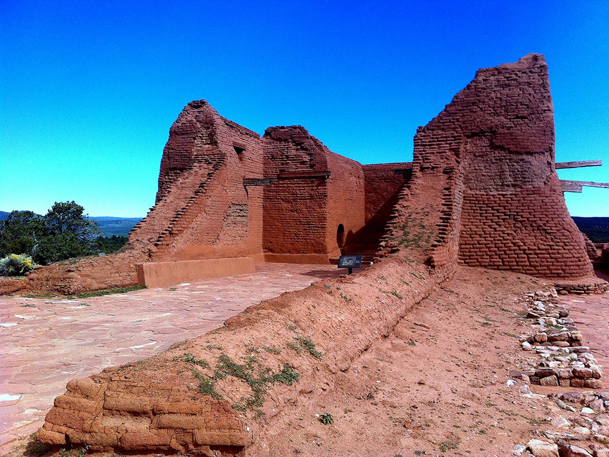
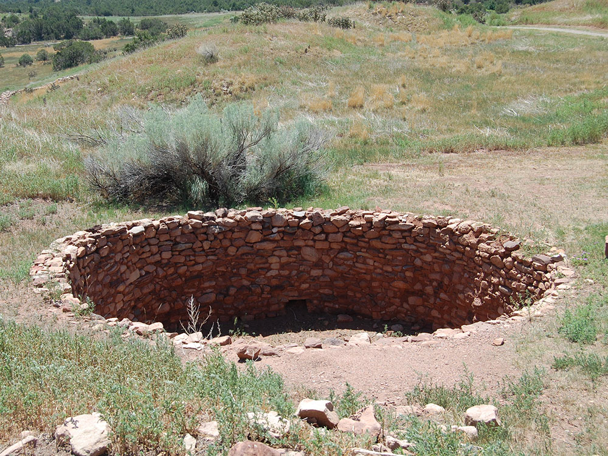
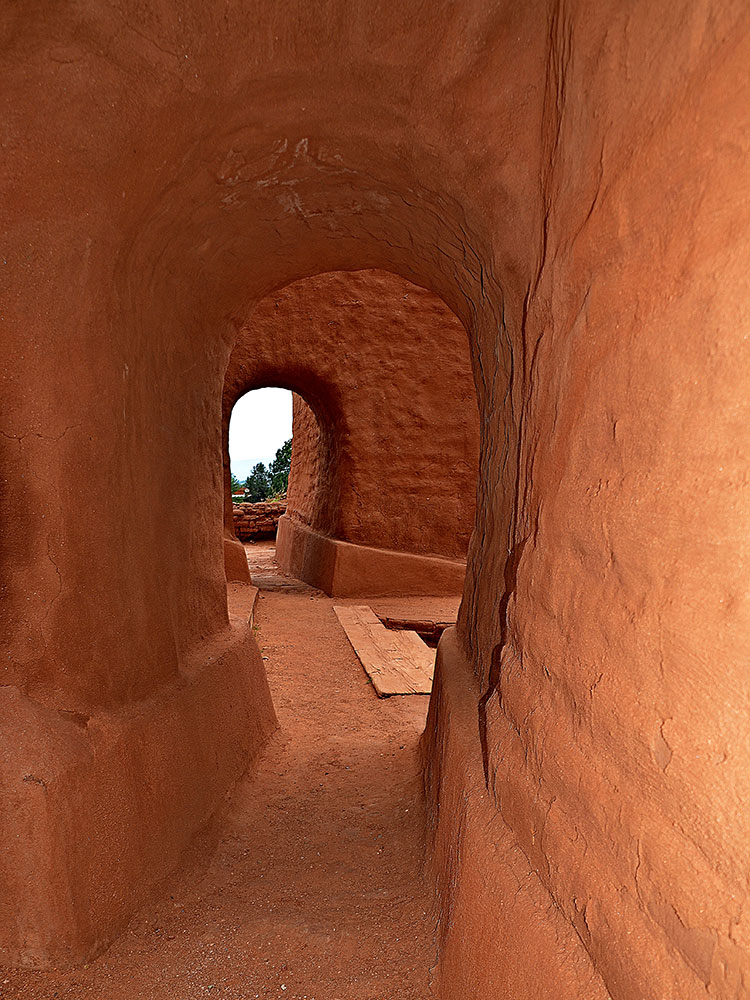
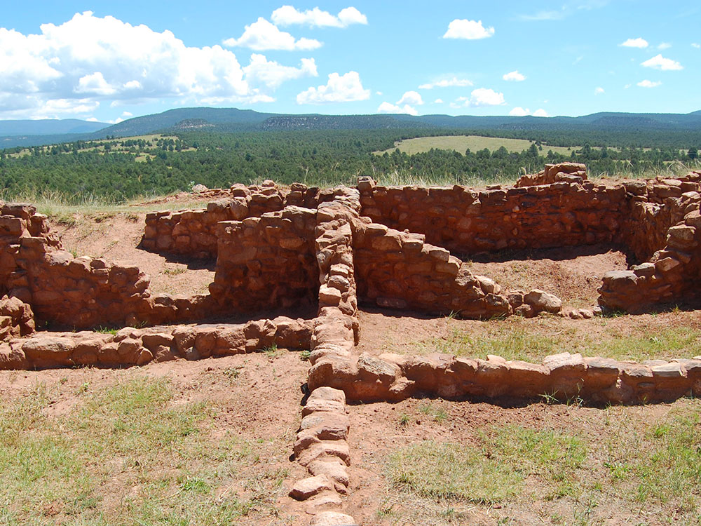
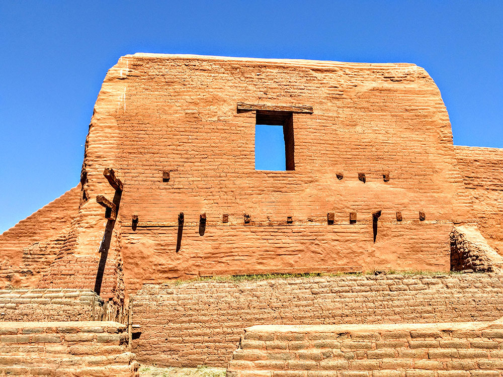

Park encompassing thousands of acres of landscape infused with historical elements from prehistoric archaeological ruins to 19th-century ranches, to a battlefield of the American Civil War
General Information
Visitor Center: 9:00am to 4:00pm
Closed Thanksgiving, Christmas Day, and New Year’s Day
How to Get There
From Santa Fe (28 mi): Take I-25 N to exit 299 near Glorieta, then follow NM-50 and NM-63 south for a short drive to the park entrance.
Overview
Pecos National Historical Park preserves 12,000 years of human history in the Pecos River valley east of Santa Fe, centered on the ruins of Pecos Pueblo and a 17th-century Spanish mission church. Pecos was one of the largest and most powerful pueblos in the Southwest, a major trading hub between the Pueblo peoples of the Rio Grande and the Plains tribes, and it was later a frontier outpost for Spanish colonists. The park also protects Santa Fe Trail ruts, the Forked Lightning Ranch and part of the Glorieta Pass battlefield, where Union forces halted the Confederate advance into New Mexico in 1862. The site became a state monument in 1935, Pecos National Monument in 1965 and a national historical park in 1990. Visitors come for the easy ruins trail, Civil War and Santa Fe Trail history, and quiet, uncrowded scenery in the foothills of the Sangre de Cristo Mountains.
Access
The main unit is in the village of Pecos, about 25 miles east of Santa Fe and roughly 1.5 hours from Albuquerque. Almost everyone arrives by car, taking I-25 to exit 299 and following NM-50 and NM-63 a short distance to the visitor center. The roads are paved, parking is at the visitor center, and the main Ancestral Sites Trail begins right behind it. The Glorieta Pass battlefield units are separate and have limited access, usually through ranger-led tours, so check with the park before planning a visit there.
Seasons
The park is open year-round and is generally quiet, with spring and fall offering the most comfortable temperatures for walking the ruins. Summer days can be hot and are often followed by afternoon thunderstorms, so mornings are best. Winter brings cold temperatures and occasional snow and ice to the pueblo trails, though the area is rarely crowded then. Guided tours of the Glorieta Pass battlefield and special events are scheduled mainly in the warmer months.
Things to Do
Step Into 12,000 Years of Southwest History
Pecos National Historical Park combines Ancestral Puebloan, Spanish colonial, Santa Fe Trail, Civil War and ranching history in one place. A morning or afternoon is enough to see the main ruins, the museum and the Forked Lightning Ranch overlook.
Walk Through Pecos Pueblo and the Mission Church
The Ancestral Sites Trail leads through the ruins of the pueblo, restored kivas and the massive adobe walls of the mission church. Interpretive signs explain how the Pecos people lived, traded and worshiped before moving to Jemez Pueblo in 1838.
Explore the Glorieta Pass Civil War Battlefield
In March 1862, Union and Confederate forces clashed at Glorieta Pass in what is often called the "Gettysburg of the West." The Glorieta Battlefield Trail and ranger-led tours take visitors through forested terrain with interpretive markers explaining the fighting.
Learn About the Santa Fe Trail and Forked Lightning Ranch
Ruts from the Santa Fe Trail still cross the park, and the Forked Lightning Ranch preserves chapters of Southwest ranching and dude-ranch history. The historic ranch and trading post areas help connect the ancient past with the more recent development of the region.
Enjoy Quiet Hiking Along the Pecos River
The South Pasture Loop Trail offers a longer walk through open meadows near the Pecos River with views of the surrounding mountains. It is a good choice for visitors who want a peaceful outing away from the main ruins.
Top Trails
Ancestral Sites Trail
Length: Approximately 1.25 miles loop
Elevation Gain: Minimal
Difficulty: Easy
This paved and gravel loop starts at the visitor center and passes the Pecos Pueblo ruins, reconstructed kiva and the mission church ruins. It is the park's signature walk and is suitable for most ages.
Glorieta Battlefield Trail
Length: Approximately 2.25 miles round trip
Elevation Gain: Moderate
Difficulty: Moderate
This forested trail follows the ground where the 1862 battle unfolded and includes interpretive stops describing the fighting. Access to the battlefield units is limited, so confirm details with the park beforehand.
South Pasture Loop Trail
Length: Approximately 3.8 miles round trip
Elevation Gain: Minimal
Difficulty: Easy to Moderate
This longer trail crosses open pasture and runs alongside the Pecos River, with wide views of the surrounding mountains and valley. It is quieter than the ruins trail and good for birding and wildlife viewing.
Visitor Centers
The Pecos National Historical Park Visitor Center is the main stop and the starting point for the Ancestral Sites Trail. Inside are a museum with Pecos Pueblo artifacts, exhibits on the pueblo, mission, Santa Fe Trail and Civil War, an orientation film, a bookstore and restrooms. Rangers can provide trail maps and information on the Glorieta Pass battlefield and any scheduled tours. Admission to the park is free.
Camping and Lodging
There is no camping or lodging in the park. Visitors can find hotels, inns and a wide range of restaurants in Santa Fe, about 30 minutes away, and more modest options in Las Vegas, New Mexico, about 45 minutes east. Camping is available at campgrounds in the Santa Fe National Forest along NM-63 north of Pecos, as well as at Hyde Memorial State Park near Santa Fe, both within an hour's drive. A few small bed-and-breakfasts and cabins can be found in and around the village of Pecos. Check each location's website for current availability.
Pecos National Historical Park's main unit is located in western San Miguel County, about 17 miles (27 km) east of Santa Fe and just south of Pecos.
Pecos Pueblo
The main unit of the park preserves the ruins of Pecos Pueblo, known historically as Cicuye (sometimes spelled Ciquique), the "village of 500 warriors". The first Pecos pueblo was one of two dozen rock-and-mud villages built in the valley around AD 1100 in the prehistoric Pueblo II Era. Within 350 years the Pueblo IV Era Pecos village had grown to house more than 2,000 people in its five-storied complex.
The people who lived at Cicuye/Pecos Pueblo spoke the Towa language, The Pecos people enjoyed a rich culture with inventive architecture and beautiful crafts. They also possessed an elaborate religious life, evidenced by the remains of over 20 ceremonial subterranean kivas. Some of the kivas have diameters as large as 40 feet and are 10 feet deep, accessed by wooden ladders. Farming was a main part of their diet and staple crops included the usual beans, corn, and squash. Their location, power and ability to supply goods made the Pecos a major trade center in the eastern part of the Puebloan territory, connecting the Pueblos to the Plains cultures such as the Comanche. There are seven distinct periods of their occupancy beginning with the Preceramic Period (11,500 B.C.E. - 600 C.E.) Ancestral Puebloan Paleo-Indians, and ending in the 1830s when the last remaining Pueblo people migrated to Jemez Pueblo where the people also spoke the Towa language.
The historical Pecos people produced, used or traded seven types of ceramic ware during their occupancy of the area. These are known as Rio Grande Greyware (plain and corrugated), Pajarito White Ware, Rio Grande Glaze Ware, Historic polychromes, Historic plain ware, White Mountain Red Ware, and Plains Apache Ware. Many of these were decorated with black, red or polychrome designs.
The main unit of the park also protects the remains of Mission Nuestra Señora de los Ángeles de Porciúncula de los Pecos, a Spanish mission near the pueblo built in the early 17th century. A 1.25-mile (2 km) self-guiding trail begins at the nearby visitor center and winds through the ruins of Pecos Pueblo and the mission church.
Pecos was visited by expeditionaries with Francisco Vásquez de Coronado in 1540. The Spanish mission church was built in 1619. A traditional kiva was built in front of the church during the Pueblo Revolt in 1680 as a rejection of the Christian religion brought by Spanish colonists. However when the Spanish returned in 1692, the Pecos community stayed on friendly terms with them, and a new, smaller church was built in 1717. The site was abandoned in 1838, after the Pecos population suffered from marauding Comanches. The surviving remnant of the Pecos population moved to the Jemez Pueblo.
Another part of the park is the Forked Lightning Ranch, a cattle ranch established in the 1920s by Tex Austin, a famous producer of rodeos. It was headquartered at the Kozlowski's Stage Stop and Tavern, a stagecoach stop on the Santa Fe Trail that had also served as a Union forces encampment before the Battle of Glorieta Pass. It was only a cattle ranch for a time before Austin converted it into a dude ranch which he promoted to Easterners. The main ranch was designed by John Gaw Meem in the Pueblo Revival style of architecture. Austin's heavily mortgaged endeavour failed, closing in 1933. In 1936 the ranch again became a working cattle ranch, and in 1941 it was purchased by Buddy Fogelson, a Texas oilman who married actress Greer Garson. After her husband died, Garson sold her share of the park in 1991 to a conservation group, which donated it to the Park Service.
Portions of the historic Santa Fe Trail run through all units of the park. This rutted wagon trail was one of the major routes by which the American Southwest grew in the 19th century.
The Battle of Glorieta Pass was fought March 26-28, 1862 in the mountain pass west of Pecos Pueblo, along the route of the Old Santa Fe Trail. Confederate forces were en route to take Union-controlled Fort Union, and were fought to a standoff by militia raised in the Colorado Territory. Although parts of the battlefield have been compromised by highway construction, two sections of the battlefield have been preserved by the Park Service on either side of the pass. Public access to these units is limited by the National Park Service.
Pecos Pueblo and an area of 341 acres (138 ha) was acquired by the state and preserved as a state monument in 1935. In 1965, President Lyndon Johnson established Pecos National Monument over the same area, and control was turned over the Park Service. In 1990 the main unit of the park was expanded to more than 6,000 acres (24 km2), including a large area of ranchland and archaeologically sensitive landscapes. The two units of the Glorieta Pass Battlefield were formally added to the park in 1993.
This article uses material from the Wikipedia article and official pages for Things To Do - Pecos National Historical Park, Hiking - Pecos National Historical Park, Western National Parks Association, Ancestral Sites Trail Guide, Must-See Attractions at Pecos National Historical Park, released under the Creative Commons Attribution-Share-Alike License 3.0. Additional information from the National Park Service.
Featured Trails

Inklein, CC BY-SA 3.0, via Wikimedia Commons; Image Size Adjusted

Ancestral Sites Trail
Difficulty: Easy
Short loop trail that passes Pecos Pueblo ruins, kivas, and a historic Spanish mission while offering interpretive insights into the area's history
Inklein, CC BY-SA 3.0, via Wikimedia Commons; Image Size Adjusted
Glorieta Battlefield Trail
Difficulty: Moderate
Forested trail that explores the historic Civil War battlefield with interpretive stops explaining the 1862 conflict
Inklein, CC BY-SA 3.0, via Wikimedia Commons; Image Size Adjusted
South Pasture Loop Trail
Difficulty: Easy to Moderate
Longer scenic trail through open pasturelands and along the Pecos River with expansive views of surrounding mountains and valley landscapes



.jpg){kind=link}




